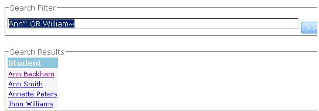
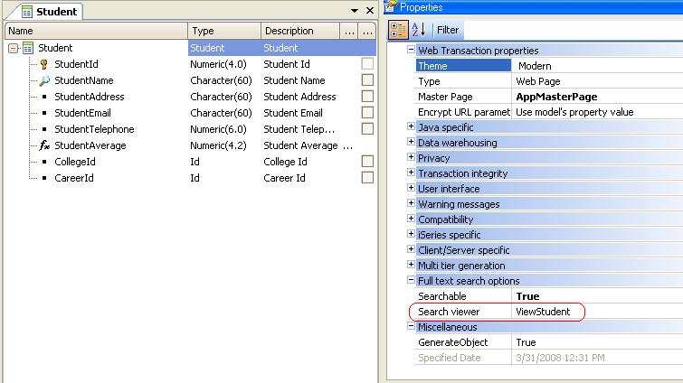
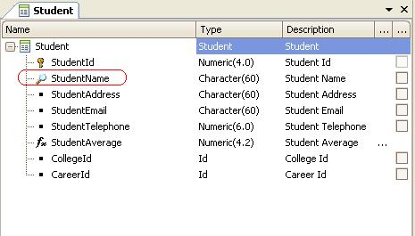

This is a very simple example. Suppose that in a university application you want to give the end user the possibility of searching for students using different wildcards in the search query.  In this example, the "Students" Transaction object is aBusiness Component, and its searchable property is set to TRUE. We have a "Search" web panel which displays a grid ("Students") that loads all the results returned by the search. Define the following variables in the "Search" Web Panel object:
So the load event for the "Students" Grid control will be the following:
Event Students.Load
&SearchResult = TextSearch.Find(&filter)
For &SearchResultItem in &SearchResult.Items()
&title = &SearchResultItem.Title
&title.Link = &SearchResultItem.Viewer
Students.Load()
Endfor
EndEvent
By selecting one of the items in the list of results returned by the search engine, you are linked to the object specified in the "Search Viewer" property of the Student Transaction. 
The Title property of SearchResultItem data type is the description attribute of the Transaction (the name of the student in this case).  See alsoFull-Text Search in Applications
|
| Backlinks | ||
| Full Text Search Examples | Full Text Search Examples - Indexing | HowTo: Configuring Full Text Search in Your Application |